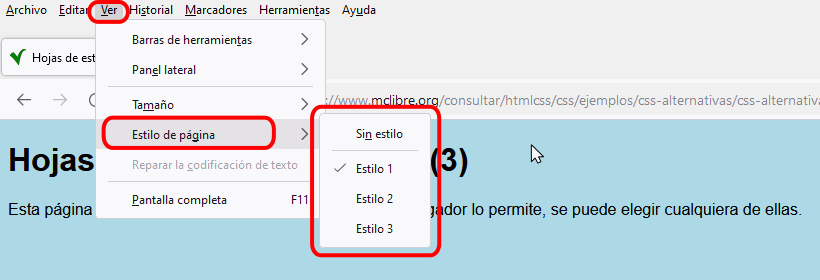

Hojas de estilo alternativas en los navegadores
Hojas de estilo alternativas en Firefox
La selección de hojas de estilo se realiza en Firefox mediante el menú . Las opciones de este menú dependen de los atributos de las hojas de estilo enlazadas.
- si la hoja (u hojas) de estilo enlazada tiene el atributo rel="stylesheet" , pero no tiene el atributo title, el menú muestra las opciones: "Sin estilo" y "Estilo de página básico". Si se elige "Sin estilo", Firefox muestra la página sin aplicar la hoja de estilo. Si se quiere volver a aplicar la hoja de estilo, hay que elegir "Estilo de página básico".
<link href="estilo.css" rel="stylesheet" type="text/css" />

- si hay una sola hoja de estilo enlazada y tiene el atributo title, el menú muestra las opciones: "Sin estilo" y el título de la hoja de estilo. Si se elige "Sin estilo", Firefox muestra la página sin aplicar la hoja de estilo. Si se quiere volver a aplicar la hoja de estilo, hay que elegir la otra opción.
<link href="estilo_color.css" rel="stylesheet" type="text/css" title="Color" />
- si hay varias hojas de estilo enlazadas y todas tienen el atributo title, el menú muestra las opciones: "Sin estilo" y todos los títulos de las hojas de estilo. Si se elige "Sin estilo", Firefox muestra la página sin aplicar la hoja de estilo. Si se quiere aplicar cualquier hoja de estilo, hay que elegir la opción correspondiente.
<link href="estilo_color.css" rel="stylesheet" type="text/css" title="Color" /> <link href="estilo_bn.css" rel="stylesheet" type="text/css" title="Blanco y negro" />
Hojas de estilo alternativas en Google Chrome
Google Chrome no permite elegir hojas de estilo alternativas, aunque se pueden instalar extensiones como AltCSS para añadir esta funcionalidad.
Hojas de estilo alternativas en Microsoft Edge
Microsoft Edge no permite elegir hojas de estilo alternativas.